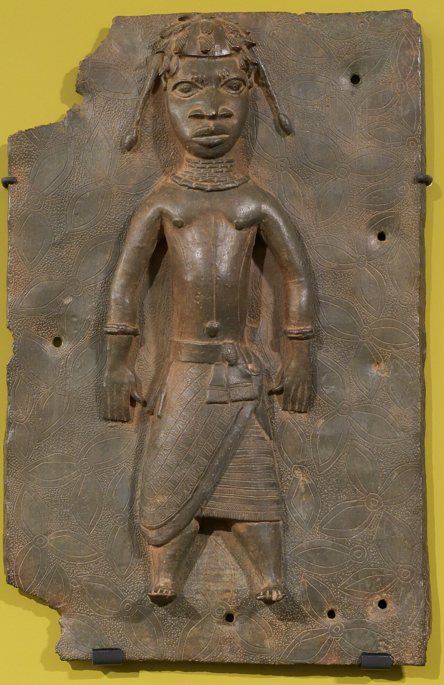

本周议题 01 · 文化 / 博物馆
文物返还为什么不能只问“当年是否合法取得”？
法律追问取得程序，伦理还会追问权力背景、文化联系和今天谁有能力解释；两套问题经常并不重合。

先说制度边界
联合国教科文组织1970年公约要求各国预防非法进出口并合作返还被盗文物，但原则上不追溯公约生效前的取得。大量殖民时期、战争时期和早期考古收藏因此不一定能直接由这部公约解决。
顺手多懂一点
来源研究不是查一张收据
一件物品的来源链要追踪发掘、赠与、买卖、出口许可和历次持有人。档案空白可能来自记录遗失，也可能来自当年根本没有把原社区视为有权说“不”的主体。法律所有权清楚，不代表历史关系没有争议。
真正值得聊的地方
“保存得更好”不能自动推出“应该永久拥有”
收藏方强调保存、研究和全球公众接触；来源社群强调物品与祖先、仪式和历史叙事不可分割。第一步，物品进入大型机构获得资源；第二步，解释权也随所有权集中；第三步，来源地的公众反而要远行才能接触自己的文化证据。
返还并非只有永久移交一种形式，还可有共同保管、长期借展、数字档案与巡展；但这些安排若仍由原持有方单方面决定，只是把所有权不平等换成合作语言。好的解决方案要同时处理物、知识和决定权。
文物返还争的从来不只是一件东西在哪里，也是谁有权说明它是什么、为何重要。